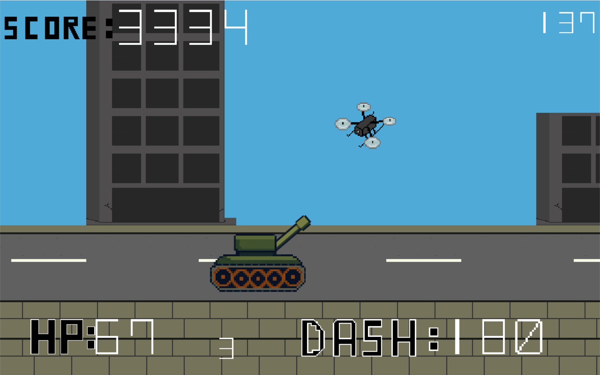
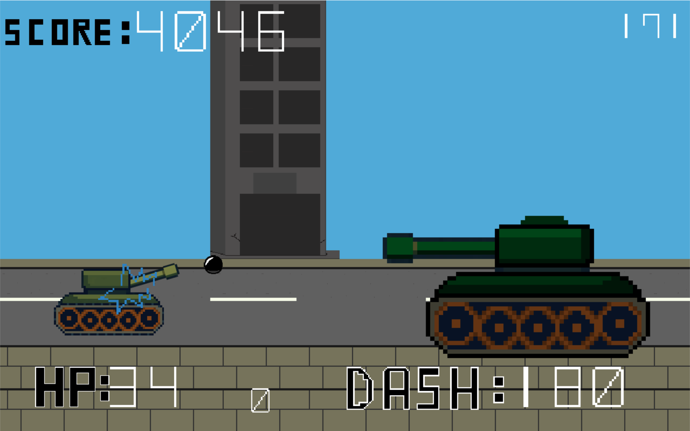
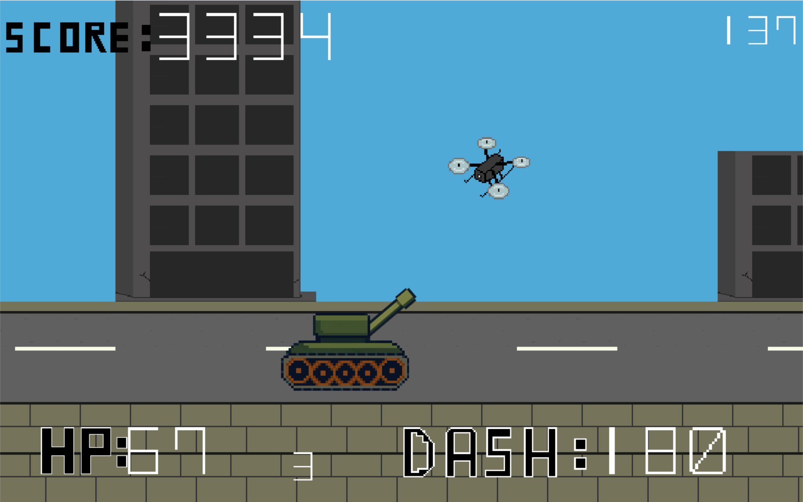
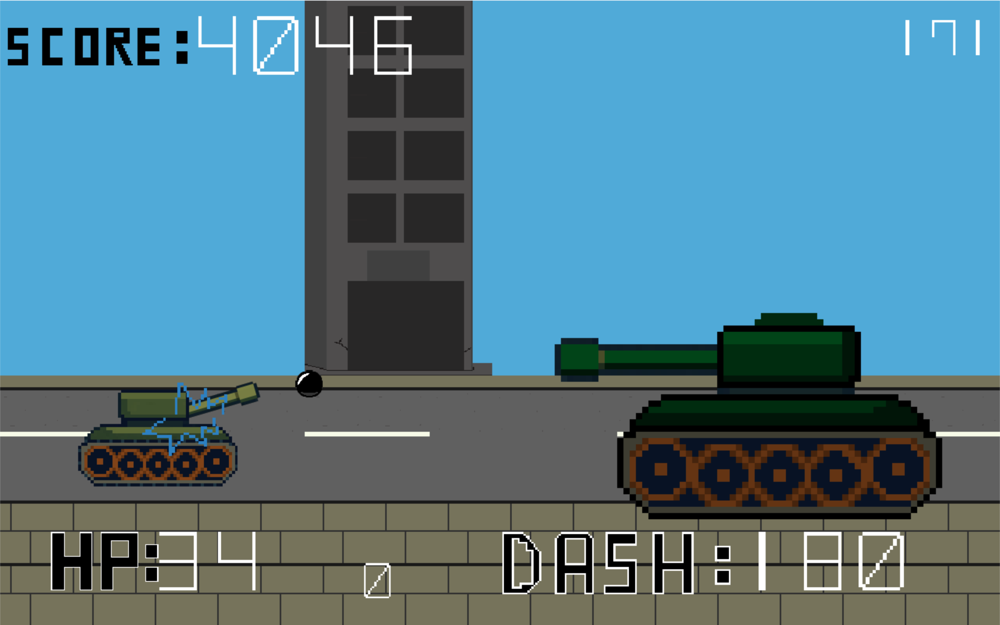
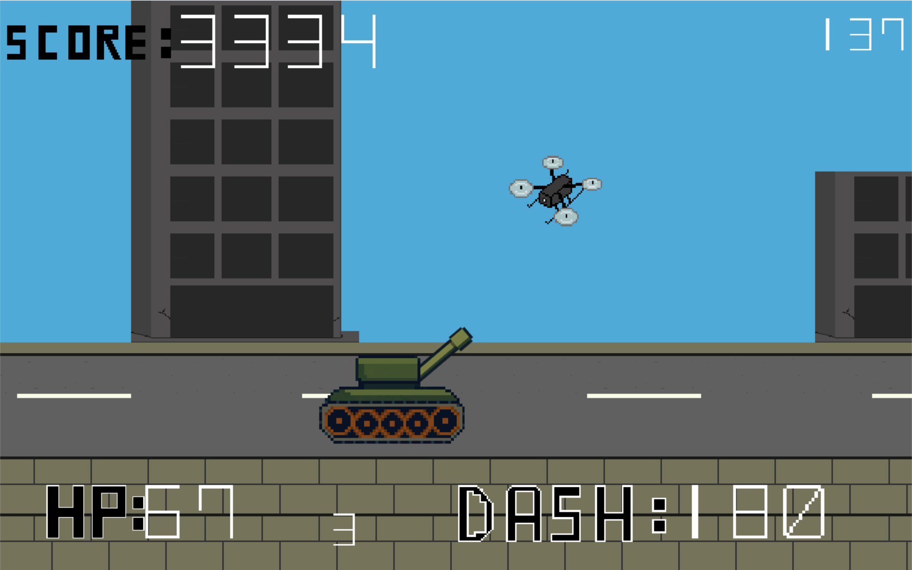
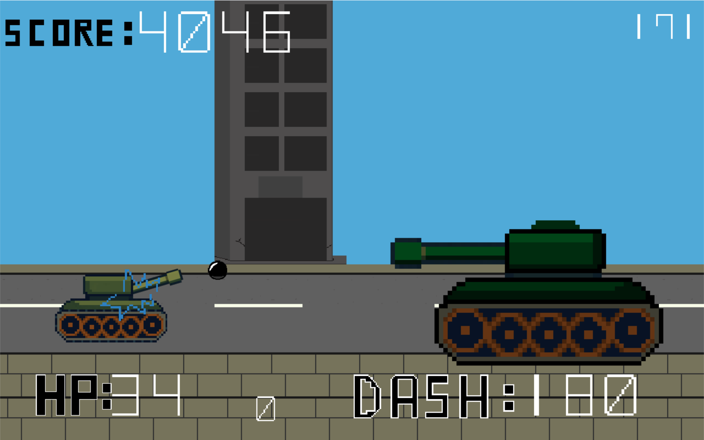
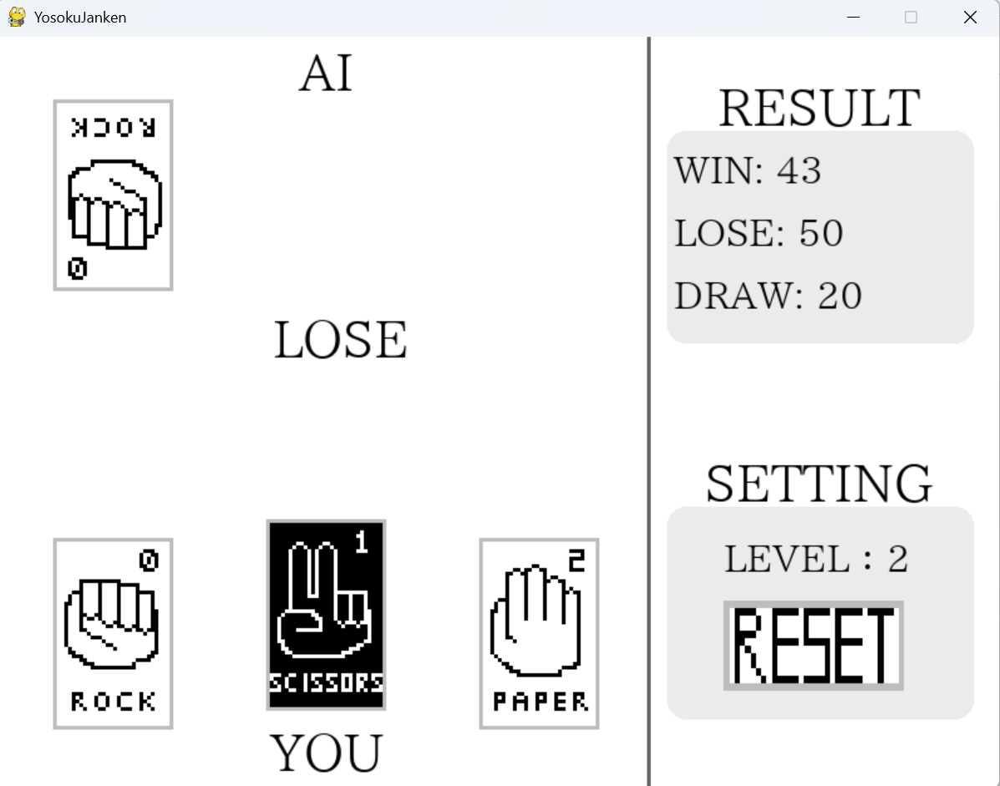
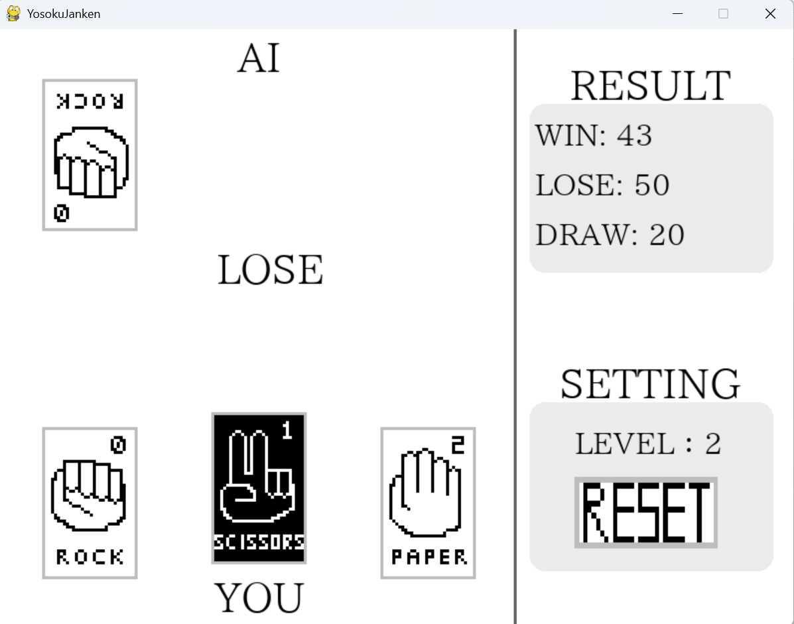
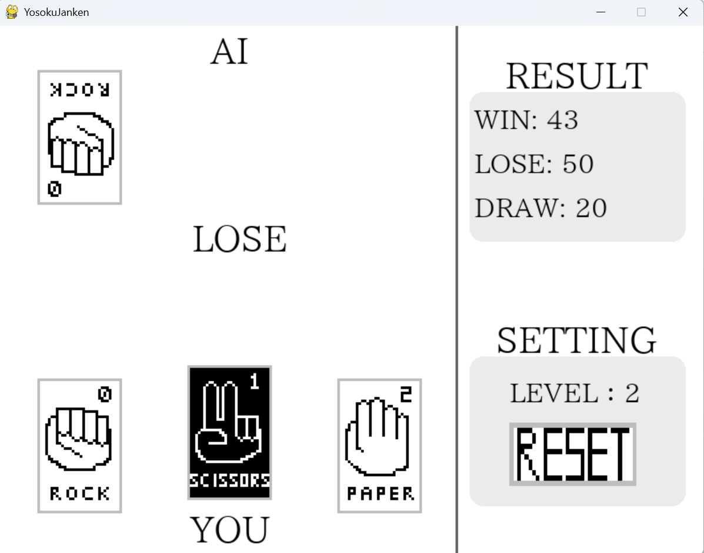

profile
Name: 坂本大和
Age: 16
Affiliation: 大阪公立大学工業高等専門学校2年知能情報コース
Hobby: ゲーム、散歩
Age: 16
Affiliation: 大阪公立大学工業高等専門学校2年知能情報コース
Hobby: ゲーム、散歩
works
MiniatureTank
 

2年生の高専祭にチームで制作した2Dシューティングゲームです。


2年生の高専祭にチームで制作した2Dシューティングゲームです。
メインプログラム、一部の画像を担当しました。
制作期間: 5か月
使用言語: Python
制作物のGitHubページ


メインプログラム、一部の画像を担当しました。
制作期間: 5か月
使用言語: Python
制作物のGitHubページ
予測じゃんけん

 
2年生の後期に制作したAIとじゃんけんができるゲームです。

2年生の後期に制作したAIとじゃんけんができるゲームです。
AIは3つのレベルを選べます。
制作期間: 2025年12月～2026年1月
使用言語: Python
制作物のGitHubページ

AIは3つのレベルを選べます。
制作期間: 2025年12月～2026年1月
使用言語: Python
制作物のGitHubページ
Someday Coming...
skills
- Python
- HTML/CSS
- Scratch
- Arduino言語
- Git/GitHub
- ArduinoIDE
- VSCode
(venvによるPython開発) - Deeds-DCS
- Real VNC
- Tera Term Cisco
- Wireshark
- Packet Tracer